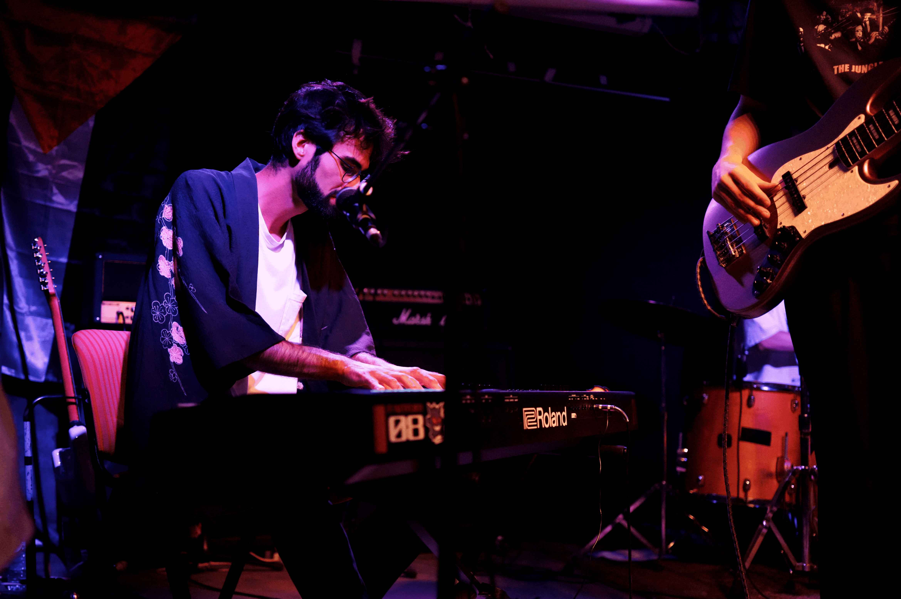
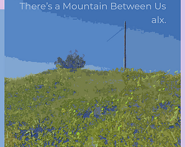
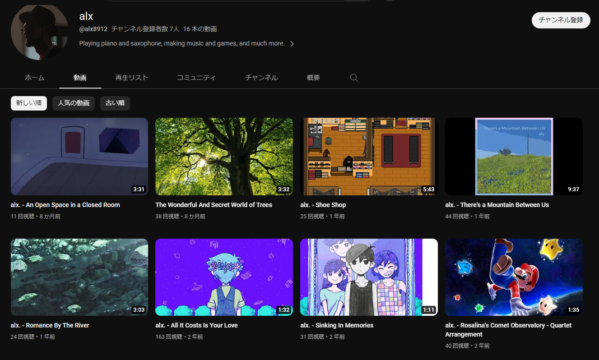
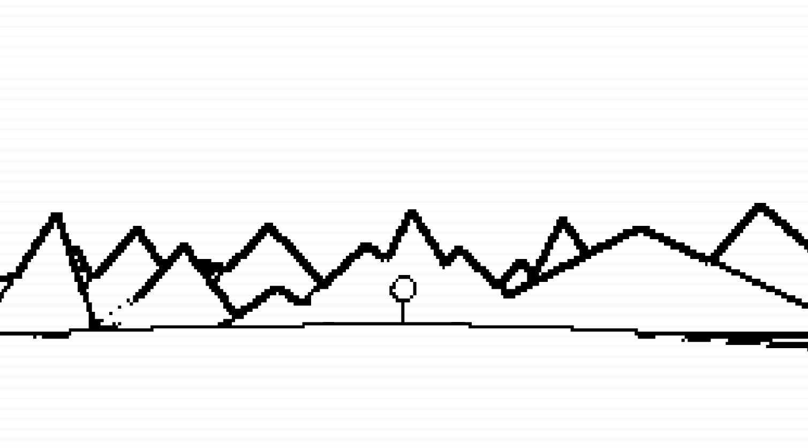
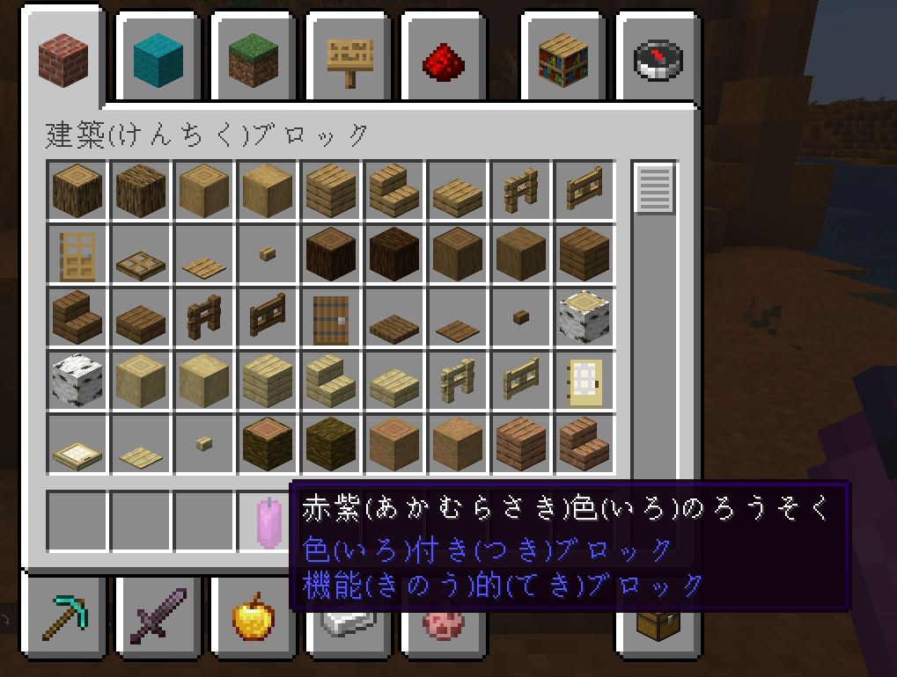
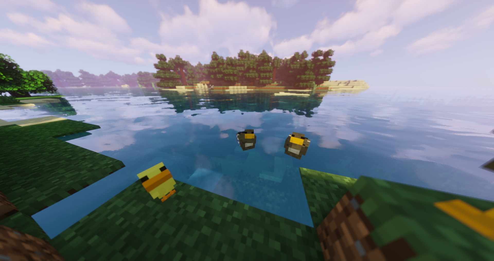
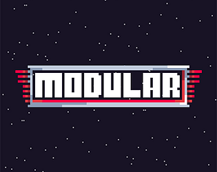

Alexandre S. Pires

About
In addition to my work in AI, I study jazz piano and composition. I'm the bandleader of the Amsterdam-based jazz-fusion band Frog Jumps Out.
I also do all facets of video-game development, from programming and design all the way to music and art! My first full-scale videogame, LIMITATIONS, is currently in development.
Besides that, I do all sorts of other things, from language learning (JP, IT, NL), poetry, digital art, photography and more!
Music
I'm a jazz pianist and composer. I'm the bandleader of Frog Jumps Out, a jazz-fusion band inspired by 80s Japanese fusion, hip-hop, indie pop and video-game music. I also do video-game music. Back in Portugal, I studied jazz piano at Hot Club de Portugal from 2022 to 2023.

Frogs Don't Fight Clean
The new EP from my jazz-fusion band Frog Jumps Out. Click to hear it on Spotify! Also available on other platforms. (2025)

Frog Jumps Out
Frog Jumps Out's Instagram. All the news of the band are posted here!

There's A Mountain Between Us
A short album made in less than 48h for a videogame music jam. Inspired by the duality of the sides of a mountain. (2022)

Youtube Channel
My early music, from hip-hop instrumentals to jazz and classical (2017-present).
Games
I like every part of game development: programming, design, music, art, and modding.

LIMITATIONS
A full-scale in-development walking simulator about the limitations present in everyone's lives. It's going to take a while! (2022-Present)

Furigana For Japanese
A Minecraft resource pack to add Furigana to Japanese, to help learning kanji. Made using NLP Deep-Learning tools. (2023)

Alex's Duck Mod
A Minecraft mod to add the simple, cute and humble duck. (2022)

Modular
Made in less than 48h for the IndieTalesGameJam, Modular is a space building arcade game where you collect modules to increase your ship's power to fight against hordes of Salivanos. (2022)
Software
A small project for generating custom sheet music to practice reading rhythms.
A test project for using midi keyboards to practice chord progression voicings.
A small and simple Chip-8 console emulator, written in C++.
Writing
How Environmentalism Accepts and Transforms Technology
An essay about technological growth driving environmentalism, which then guides (or should guide) technological growth.
How Much Change Can a Single Technology Make?
An essay about the limits of isolated technological developments.
The Journey to Li-ion Batteries, their Importance, and their Challenges
An essay written for the Big History and Sustainability course, in collaboration with João Fonseca. It explores the relevance and challenges faced by lithium-ion batteries.
Can Anthropos Survive Anthropocentrism?
An essay written for the Big History and Sustainability course, in collaboration with João Fonseca. It presents the limitations of anthropocentric thinking.
Other things
I also try to find time to do other arts, from poetry, storywriting, digital art, and photography. You might find it somewhere!